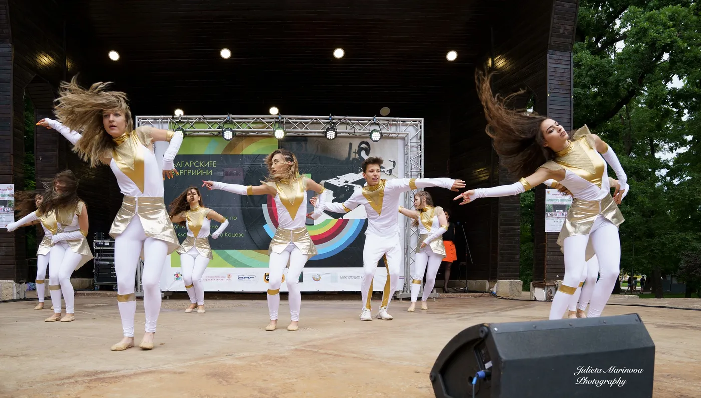
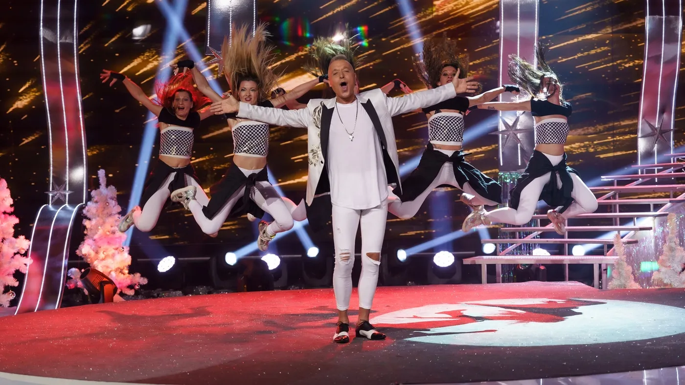

ДЕТСКА ШКОЛА
Групи „Малки“ и „Големи“, участия, концерти, фестивали и сценични преживявания.
ГАЛЕРИЯ ДЕТСКА ШКОЛАVeda Junior има дългогодишен сценичен опит, участия в телевизионни продукции, стотици награди от фестивали, работа с редица български и чуждестранни изпълнители и специално изработени сценични костюми.

Групи „Малки“ и „Големи“, участия, концерти, фестивали и сценични преживявания.
ГАЛЕРИЯ ДЕТСКА ШКОЛА
Професионални участия, концерти, телевизионни формати и музикални клипове.
ГАЛЕРИЯ ПРОФЕСИОНАЛЕН СЪСТАВ